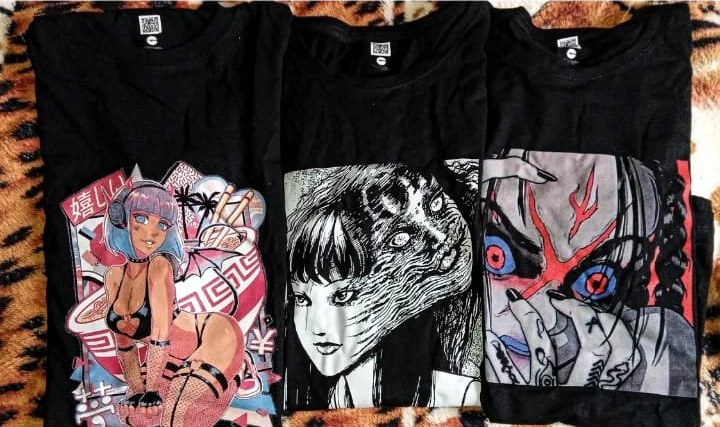

Make your path
En Mr Personality, nos especializamos en el arte del estampado, ofreciendo a nuestros clientes la oportunidad de expresar su individualidad a través de prendas únicas y personalizadas. Desde el principio, nuestra misión ha sido empoderar a cada persona para que se destaque y cuente su propia historia a través de la moda. En el corazón de nuestro emprendimiento se encuentra la fusión de la tradición artesanal con la innovación tecnológica. Nuestro proceso de personalización permite a cada cliente convertirse en el diseñador de sus propias prendas, llevando la moda más allá de las tendencias convencionales y permitiendo que la autenticidad brille.

Ubicados en la vibrante ciudad de Cali, nos hemos convertido en un punto de encuentro para los amantes de la moda que buscan algo más que prendas convencionales. Colaboramos con talentosos artistas locales y diseñadores emergentes, promoviendo la diversidad y la inclusión en cada pieza que creamos. Además, estamos comprometidos con la sostenibilidad y nos esforzamos por minimizar nuestra huella ambiental. Creemos que la moda no solo se trata de lucir bien, sino también de hacerlo de una manera consciente y responsable. En Mr Personality, estamos emocionados por el camino que estamos creando, y nuestra visión va más allá de la ropa. Queremos ser una fuente de inspiración para todos aquellos que desean explorar, experimentar y celebrar su personalidad.